Soru 1Cevap: E
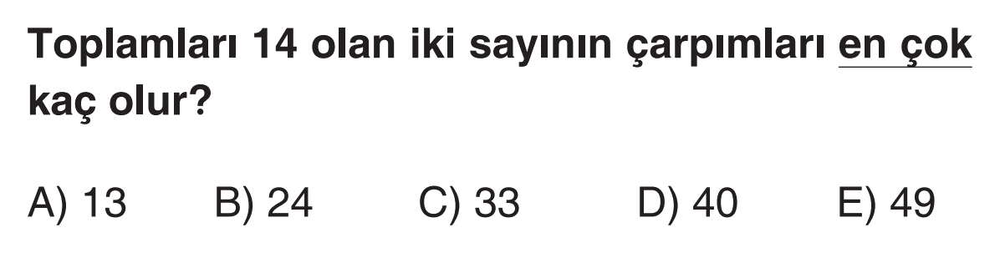
Çözüm
- Sayılar $x$ ve $14-x$: çarpım $x(14-x)$.
- Kökler $0$ ve $14$; tepe $x=7$.
- En çok $7\cdot7=49$ (E).
Cevap: E
Soru 2Cevap: C
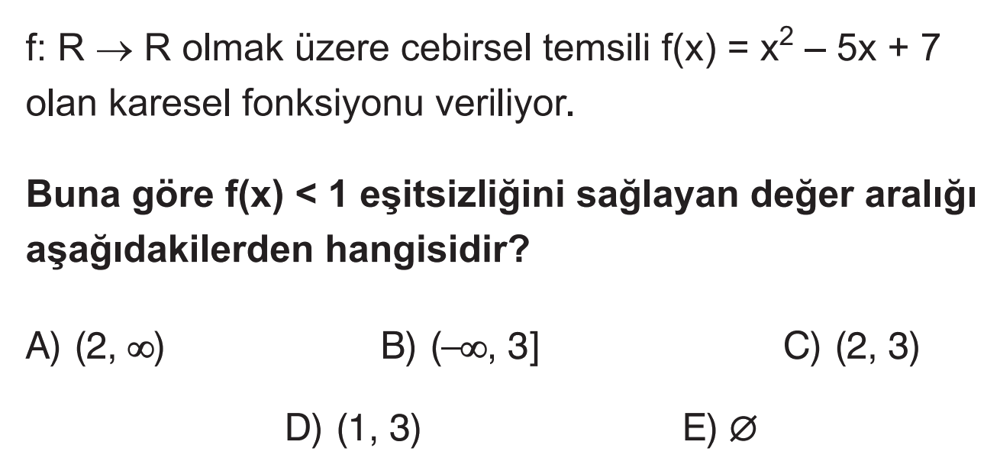
Çözüm
- $x^2-5x+7\lt1\Rightarrow x^2-5x+6\lt0$.
- $(x-2)(x-3)\lt0$.
- $(2,3)$ (C).
Cevap: C
Soru 3Cevap: D
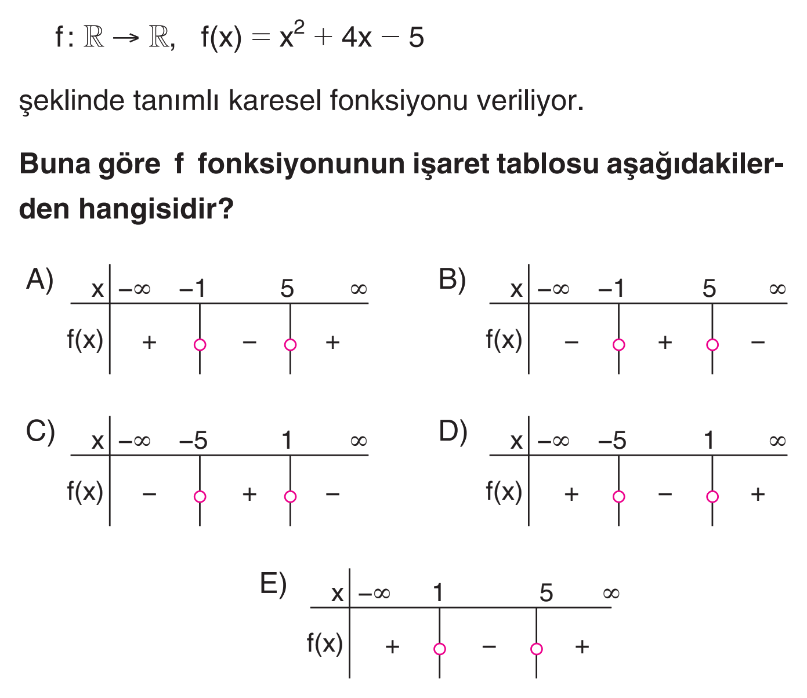
Çözüm
- $x^2+4x-5=(x+5)(x-1)$: sıfırlar $-5$ ve $1$.
- Baş katsayı pozitif: köklerin dışında $+$, arasında $-$.
- Tablo $+\,-\,+$ ($-5$, $1$): D.
Cevap: D
Soru 4Cevap: B
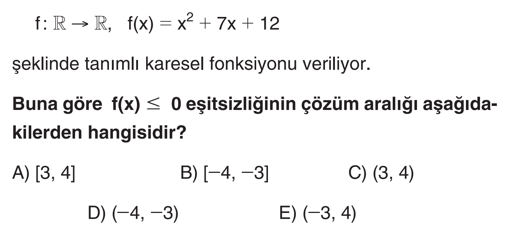
Çözüm
- $x^2+7x+12=(x+3)(x+4)$: sıfırlar $-4$, $-3$.
- Kollar yukarı: köklerin arasında negatif ya da sıfır.
- $f(x)\le0$ çözümü $[-4,-3]$ (B).
Cevap: B
Soru 5Cevap: C
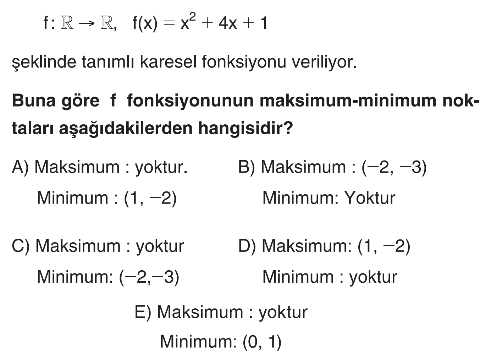
Çözüm
- $x^2+4x+1=(x+2)^2-3$.
- Kollar yukarı: minimum noktası $(-2,-3)$.
- Yukarı doğru sınırsız: maksimum yok (C).
Cevap: C
Soru 6Cevap: A
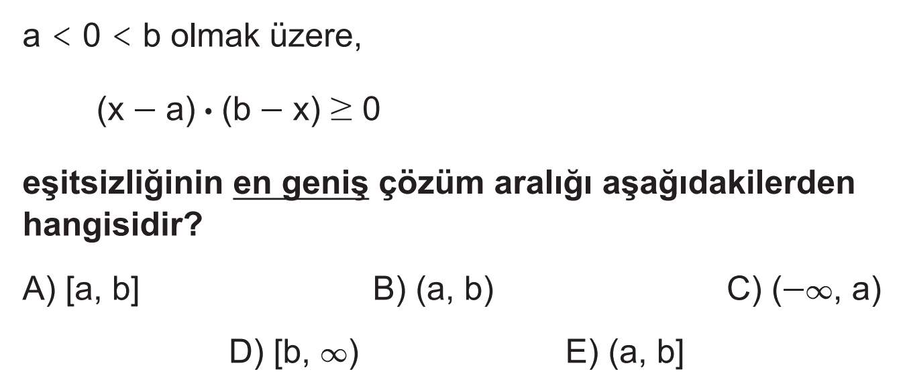
Çözüm
- $(x-a)(b-x)=-(x-a)(x-b)$; sıfırlar $a\lt b$, kollar aşağı.
- Kollar aşağı olan parabol köklerin arasında pozitif, köklerde sıfırdır.
- $\ge0$ için çözüm $[a,b]$ (A).
Cevap: A
Soru 7Cevap: D
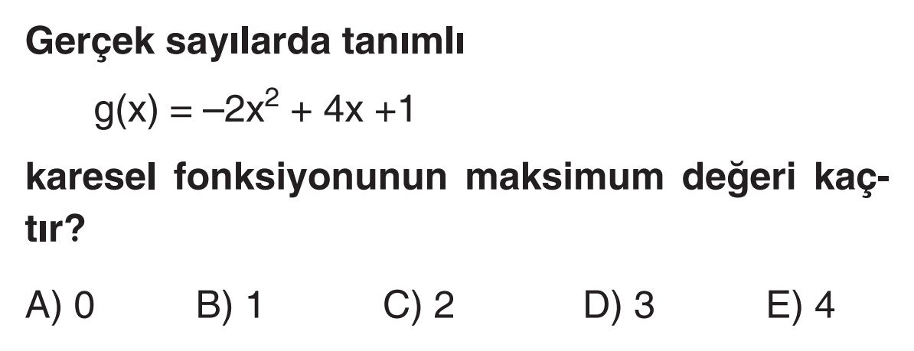
Çözüm
- $-2x^2+4x+1=-2(x^2-2x+1)+2+1$.
- $=-2(x-1)^2+3$.
- En büyük değer $3$ (D).
Cevap: D
Soru 8Cevap: E
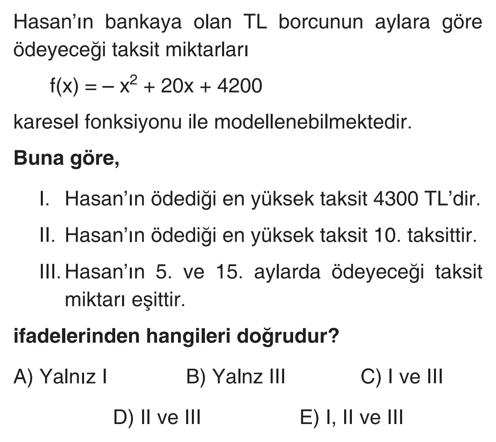
Çözüm
- $-x^2+20x+4200=-(x-10)^2+4300$.
- En yüksek taksit $4300$ TL (I), $10$. ayda (II).
- $5$ ve $15$, $10$'a eşit uzaklıkta: $f(5)=f(15)$ (III). Cevap E.
Cevap: E
Soru 9Cevap: B
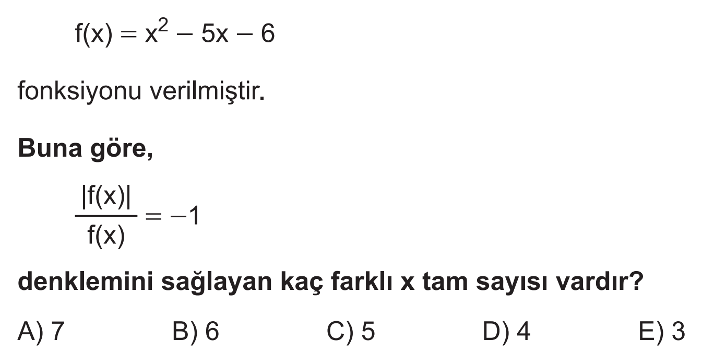
Çözüm
- $\dfrac{|f(x)|}{f(x)}=-1\iff f(x)\lt0$.
- $x^2-5x-6=(x-6)(x+1)\lt0\Rightarrow-1\lt x\lt6$.
- Tam sayılar $0,\dots,5$: $6$ tane (B).
Cevap: B
Soru 10Cevap: B
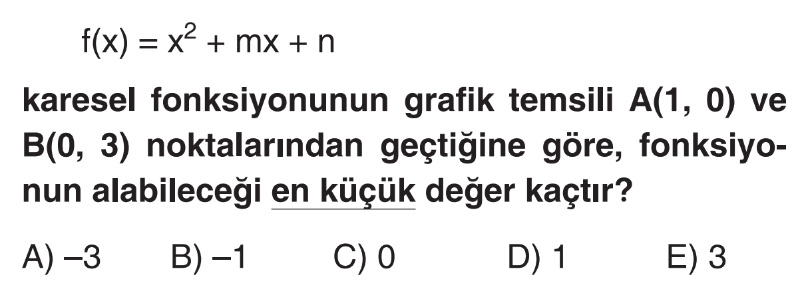
Çözüm
- $B(0,3)\Rightarrow n=3$; $A(1,0)\Rightarrow1+m+3=0\Rightarrow m=-4$.
- $f(x)=x^2-4x+3=(x-2)^2-1$.
- En küçük değer $-1$ (B).
Cevap: B
Soru 11Cevap: A
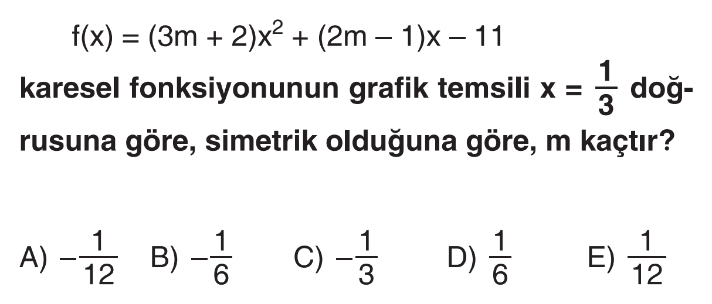
Çözüm
- Simetri ekseni $x=-\dfrac{2m-1}{2(3m+2)}=\dfrac13$.
- $-3(2m-1)=2(3m+2)\Rightarrow-6m+3=6m+4$.
- $m=-\dfrac1{12}$ (A).
Cevap: A
Soru 12Cevap: A
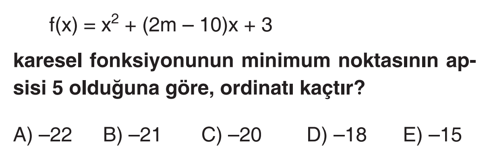
Çözüm
- Tepe apsisi $-\dfrac{2m-10}2=5\Rightarrow m=0$.
- $f(x)=x^2-10x+3$.
- $f(5)=25-50+3=-22$ (A).
Cevap: A
Soru 13Cevap: D
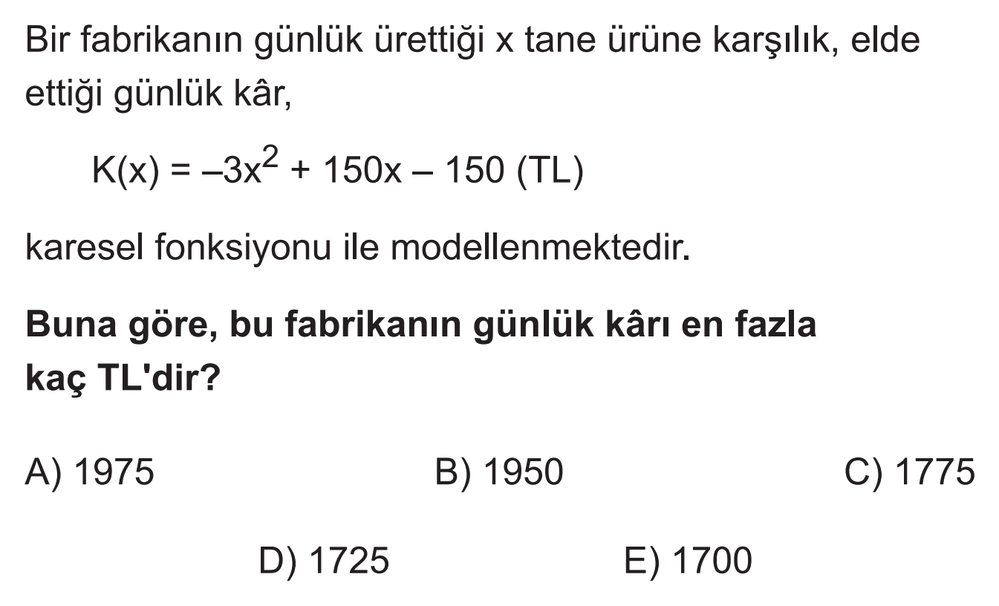
Çözüm
- $K(x)=-3x^2+150x-150$; $a\lt0$, en büyük değer tepe noktasında.
- Tepe $x=-\dfrac{150}{2\cdot(-3)}=25$.
- $K(25)=-1875+3750-150=1725$ TL (D).
Cevap: D
Soru 14Cevap: D
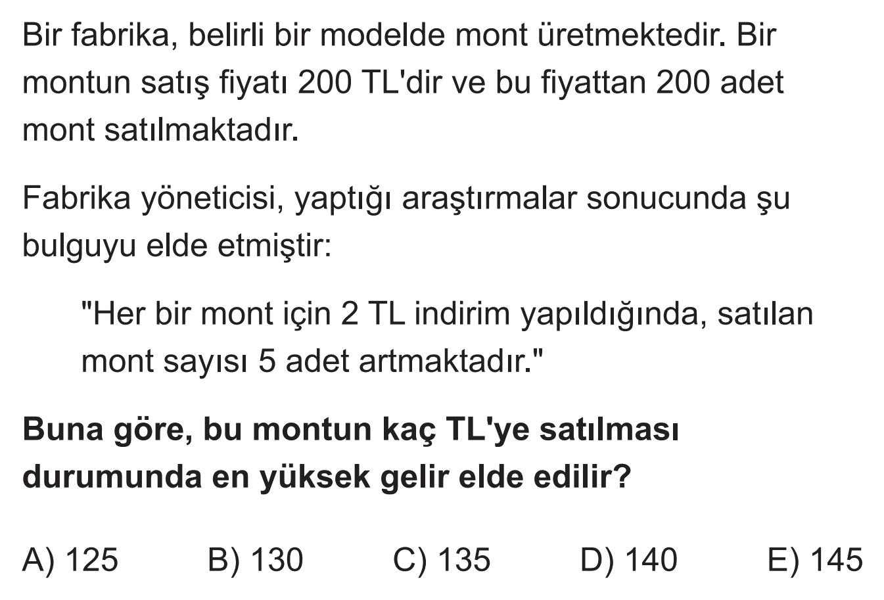
Çözüm
- $n$ indirimde fiyat $200-2n$, satış $200+5n$: gelir $(200-2n)(200+5n)$.
- Kökler $n=100$ ve $n=-40$; tepe orta noktada: $n=30$.
- Fiyat $200-60=140$ TL (D).
Cevap: D
Soru 15Cevap: C
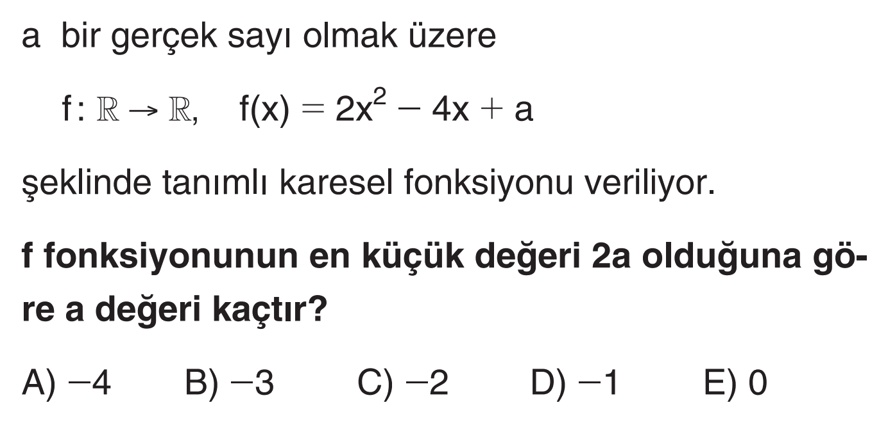
Çözüm
- $2x^2-4x+a=2(x-1)^2+a-2$.
- En küçük değer $a-2=2a$.
- $a=-2$ (C).
Cevap: C
Soru 16Cevap: B
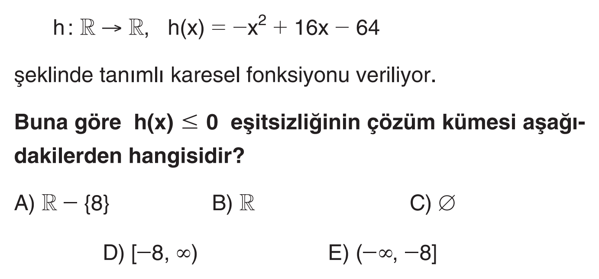
Çözüm
- $-x^2+16x-64=-(x-8)^2$.
- $-(x-8)^2\le0$ her $x$ için doğrudur.
- Çözüm kümesi $\mathbb R$ (B).
Cevap: B
Soru 17Cevap: C
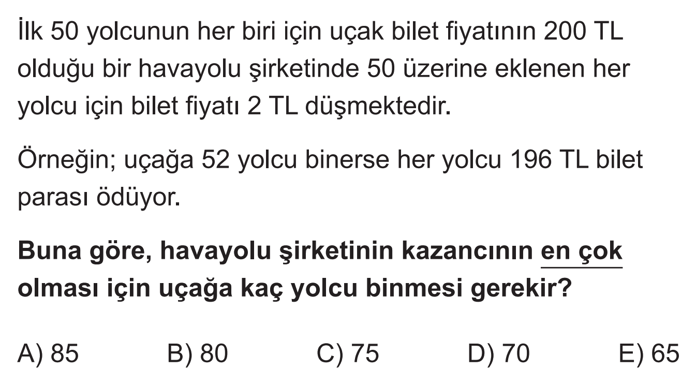
Çözüm
- $n$ ek yolcuda kazanç $K(n)=(50+n)(200-2n)=2(50+n)(100-n)$.
- Kökler $-50$ ve $100$; parabol aşağı açık, tepe orta noktada: $n=25$.
- Yolcu sayısı $50+25=75$ (C).
Cevap: C
Soru 18Cevap: C
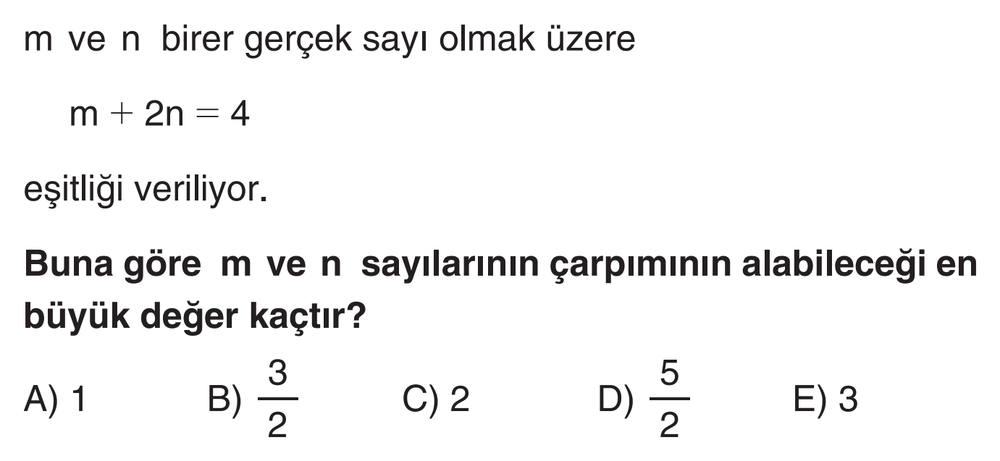
Çözüm
- $m=4-2n\Rightarrow mn=4n-2n^2=-2(n-1)^2+2$.
- En büyük değer $n=1$'de.
- $mn=2$ (C).
Cevap: C
Soru 19Cevap: C
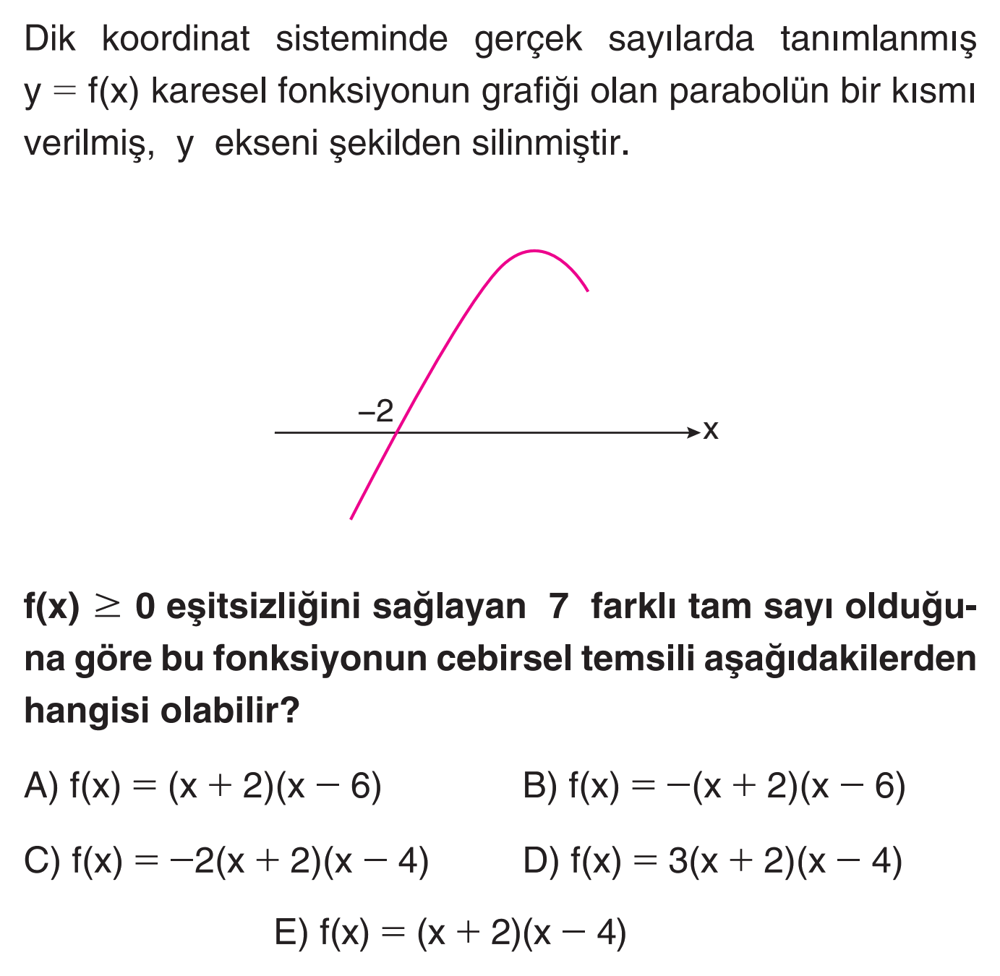
Çözüm
- Grafik $-2$'den geçiyor ve kollar aşağı: $f\ge0$ köklerin arasında.
- $7$ tam sayı: $-2,-1,\dots,4$; diğer kök $4$.
- Kolları aşağı: $f(x)=-2(x+2)(x-4)$ (C).
Cevap: C
Soru 20Cevap: A
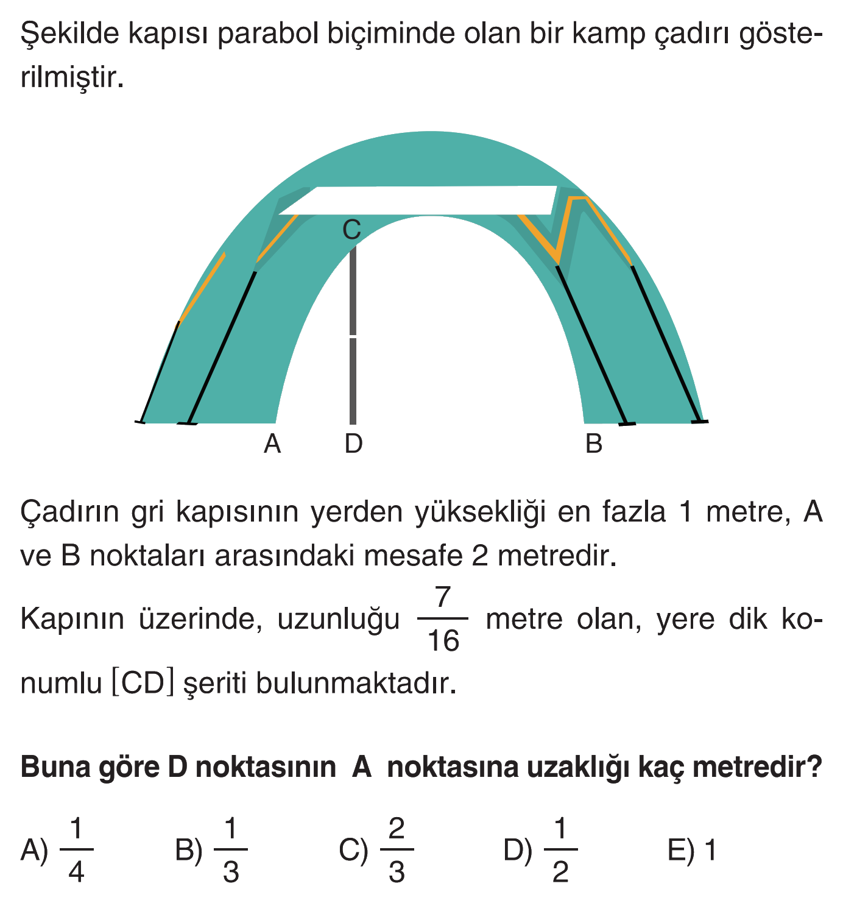
Çözüm
- Kapı: tepe yüksekliği $1$, $|AB|=2$; merkezden ölçülen $t$ için yükseklik $1-t^2$.
- $C$'nin yüksekliği $\dfrac7{16}$: $1-t^2=\dfrac7{16}\Rightarrow t=\dfrac34$.
- $|DA|=1-\dfrac34=\dfrac14$ m (A).
Cevap: A
Soru 21Cevap: D
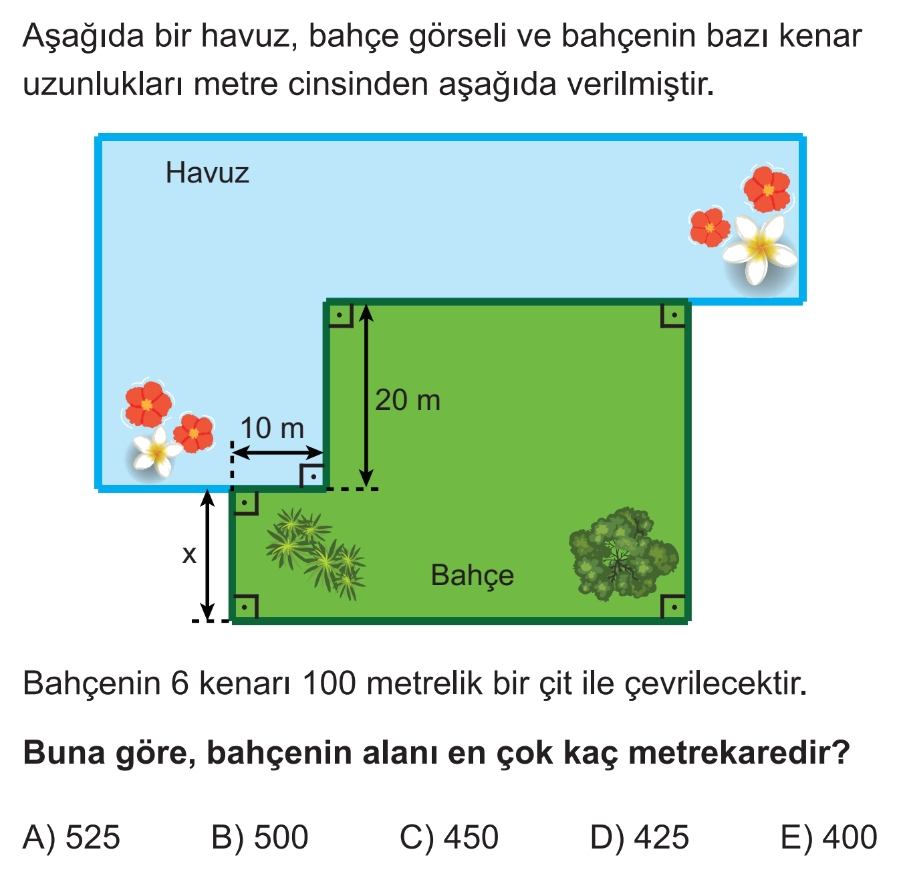
Çözüm
- Bahçenin üst genişliği $w$ olsun; çevre $2w+2x+60=100\Rightarrow w=20-x$.
- Alan $20w+(w+10)x=400+10x-x^2$.
- $x=5$'te en büyük: $400+50-25=425$ m² (D).
Cevap: D
Soru 22Cevap: E
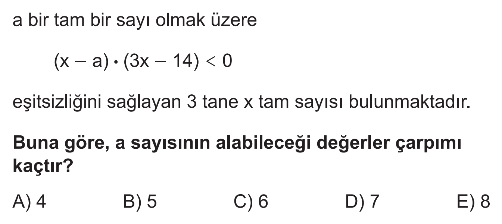
Çözüm
- Sıfırlar $a$ ve $\dfrac{14}3\approx4{,}67$; çözüm bunların arası.
- $a\lt\dfrac{14}3$ ise tam sayılar $2,3,4$ olmalı: $1\le a\lt2\Rightarrow a=1$.
- $a\gt\dfrac{14}3$ ise $5,6,7$: $7\lt a\le8\Rightarrow a=8$. Çarpım $8$ (E).
Cevap: E
Soru 23Cevap: D
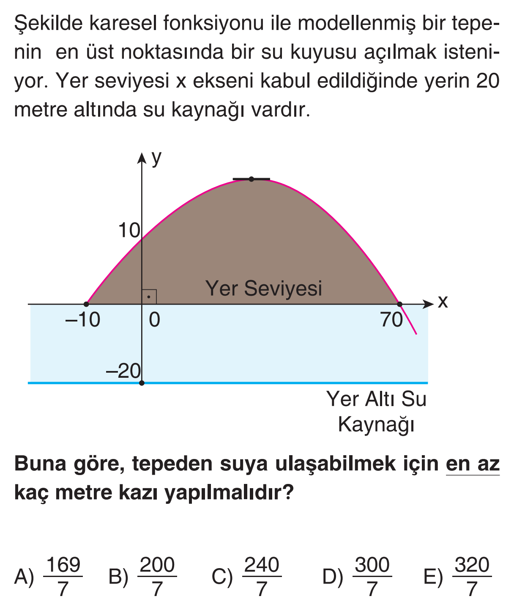
Çözüm
- Kökler $-10$, $70$: $f(x)=a(x+10)(x-70)$; $f(0)=-700a=10\Rightarrow a=-\dfrac1{70}$.
- Tepe $x=30$: $f(30)=\dfrac{40\cdot40}{70}=\dfrac{160}7$.
- Kazı $\dfrac{160}7+20=\dfrac{300}7$ m (D).
Cevap: D
Soru 24Cevap: C
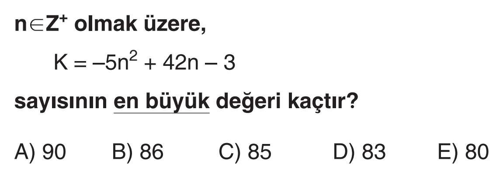
Çözüm
- $-5n^2+42n-3$'ün tepe apsisi $\dfrac{42}{10}=4{,}2$.
- $n$ pozitif tam sayı: tepeye en yakın $n=4$.
- $K(4)=-80+168-3=85$ (C).
Cevap: C